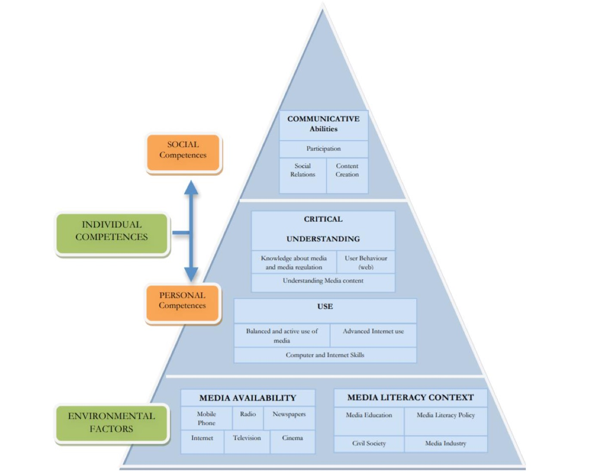

This chapter analyses how media literacy is addressed in the 2020 Draft Spanish General Law on Audiovisual Communication.
Book chapters · 2021
La alfabetización mediática en el marco del Anteproyecto de Ley General de Comunicación Audiovisual español de 2020
[Media Literacy within the Framework of the 2020 Draft Spanish General Law on Audiovisual Communication]
In: Plataformas, consumo mediático y nuevas realidades digitales: Hacia una perspectiva integradora (pp. 756–781). Dykinson
